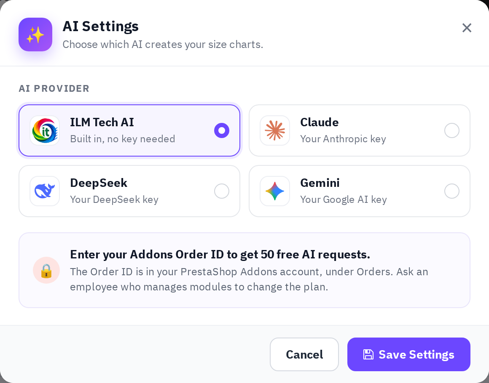

Click AI Settings above the size chart list and choose which AI creates your size charts:

- ILM Tech AI (built in, no key needed): the shop connects with your licence (see Install and activate). Enter your Addons Order ID once to get free AI requests. Free requests are given once and work while your support period runs; each size chart created or changed by AI uses one. For more, subscribe to the Pro plan (a set number of requests every month) with Manage plan, or buy extra requests, which are paid once and stay until you use them. The window always shows how many requests are left.
- Claude (Anthropic), DeepSeek or Gemini (Google AI): use your own API key from that provider (Get key links to it) and choose a model. There are no limits from ILM Tech; the provider bills you directly.
Test Connection checks the choice, then Save Settings. The AI buttons appear once the test has passed.
Privacy: on the free requests, what you ask the AI is kept without your shop name or personal details to help improve the service. Requests on the Pro plan are never saved.